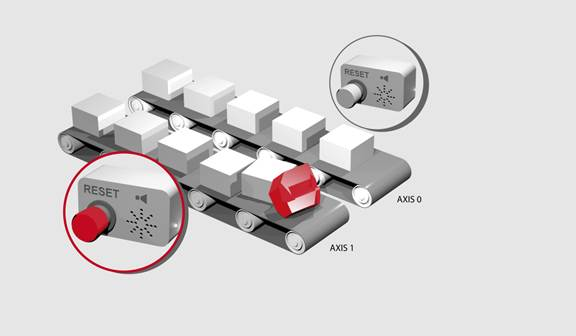

System Command
DISABLE_GROUP(parameter[, parameters…])
Used to create a group of axes which will be disabled if there is a motion error in one or more of the group. After the group is created, when an error occurs all the axes in the group will have their AXIS_ENABLE set to OFF and SERVO set to OFF .
Multiple groups can be made, although one axis cannot belong to more than one group.
Only axes that have individual enables should be used in a disable group. Such as Digital drives and Steppers.
DISABLE_GROUP(-1)
Clears all groups
DISABLE_GROUP(axis1 [,axis2[, axis3[, axis4.....]]])
Assigns the listed axis to a group
|
axis1: |
Axis number of first axis in group |
|
axis2: |
Axis number of second axis in group. |
|
axisN: |
Axis number of n th axis in group. |
As many parameters as axes on the system may be specified.
A machine has 2 functionally separate systems, which have their own emergency stop and operator protection guarding. If there is an error on one part of the machine, the other part can safely remain running while the cause of the error is removed, and the axis group re-started. We need to set up 2 separate axis groupings.
DISABLE_GROUP(-1) 'remove any previous axis groupings
DISABLE_GROUP(0, 1, 2, 6) 'group axes 0 to 2 and 6
DISABLE_GROUP(3, 4, 5, 7) 'group axes 3 to 5 and 7
WDOG = ON 'turn on the enable relay and the remote drive enable
FOR ax = 0 TO 7
AXIS_ENABLE AXIS(ax) = ON 'enable the 8 axes
SERVO AXIS(ax) = ON 'start position loop servo for each axis
NEXT ax
Two conveyors operated by the same Motion Coordinator are required to run independently so that if one has a “jam” it will not stop the second conveyor.

DISABLE_GROUP(0) 'put axis 0 in its own group
DISABLE_GROUP(1) 'put axis 1 in another group
GOSUB group_enable0
GOSUB group_enable1
WDOG = ON
FORWARD AXIS(0)
FORWARD AXIS(1)
WHILE TRUE
IF AXIS_ENABLE AXIS(0) = 0 THEN
PRINT "motion error axis 0"
reset_0_flag = 1
ENDIF
IF AXIS_ENABLE AXIS(1) = 0 THEN
PRINT "motion error axis 1"
reset_1_flag = 1
ENDIF
IF reset_0_flag = 1 AND IN(0) = ON THEN
GOSUB group_enable0
FORWARD AXIS(0)
reset_0_flag = 0
ENDIF
IF reset_1_flag = 1 AND IN(1) = ON THEN
GOSUB group_enable1
FORWARD AXIS(1)
reset_1_flag = 0
ENDIF
WEND
group_enable0:
BASE(0)
DATUM(7) 'clear motion error on axis 0
WA(10)
AXIS_ENABLE = ON
SERVO = ON
RETURN
group_enable1:
BASE(1)
DATUM(7) 'clear motion error on axis 0
WA(10)
AXIS_ENABLE = ON
SERVO = ON
RETURN
One group of axes in a machine requires resetting, without affecting the remaining axes, if a motion error occurs. This should be done manually by clearing the cause of the error, pressing a button to clear the controllers’ error flags and re-enabling the motion.
DISABLE_GROUP(-1) 'remove any previous axis groupings
DISABLE_GROUP(0, 1, 2) 'group axes 0 to 2
GOSUB group_enable 'enable the axes and clear errors
WDOG = ON
SPEED = 1000
FORWARD
WHILE IN(2) = ON 'check axis 0, but all axes in the group
'will disable together
IF AXIS_ENABLE = 0 THEN
PRINT "Motion error in group 0"
PRINT "Press input 0 to reset"
IF IN(0) = 0 THEN 'checks if reset button is pressed
GOSUB group_enable 'clear errors and enable axis
FORWARD 'restarts the motion
ENDIF
ENDIF
WEND
STOP 'stop program running into sub routine
group_enable: 'Clear group errors and enable axes
DATUM(0) 'clear any motion errors
WA(10)
FOR axis_no = 0 TO 2
AXIS_ENABLE AXIS(axis_no) = ON 'enable axes
SERVO AXIS(axis_no) = ON 'start position loop servo
NEXT axis_no
RETURN